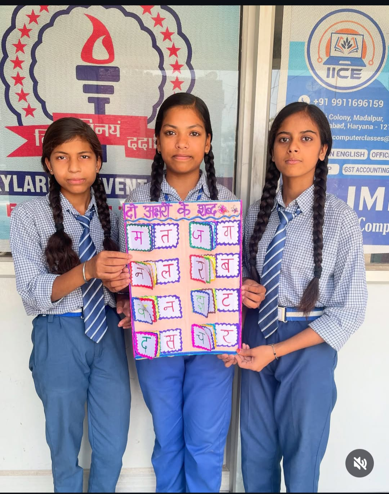

Programs designed around every stage of learning.
The SKYLARK MODERN SCHOOL, Greater Faridabad emphasises on providing students with a complete education that intersperses a variety of extracurricular activities with traditional classroom instruction. We keep up with the times by embracing innovative teaching methods and technological advancements. We begin by introducing fundamental knowledge and education to students that is required to be educated citizens. Learners are provided with the best ideas and aids in cultivating an appreciation of human ingenuity and accomplishment.
Moral education serves as the foundation for our school's principles, and our students' interactions with their peers and other faculty train them towards civic awareness. To improve the learning experience for our students, we provide a wide variety of after-school programmes. The goal of The SKYLARK MODERN SCHOOL, Faridabad is to help students' emotional well-being by teaching them life skills and wellness techniques. We strive to focus on the personal development of students and encourage curiosity toward learning.
Our academic programs provide students with opportunities
to build strong foundations while developing creativity,
communication and confidence.

Juniors
A supportive environment where children discover the joy of learning through activities, projects and classroom experiences.
Learn More →
Seniors
Students develop stronger academic skills while learning to collaborate, communicate and think independently.
Learn More →